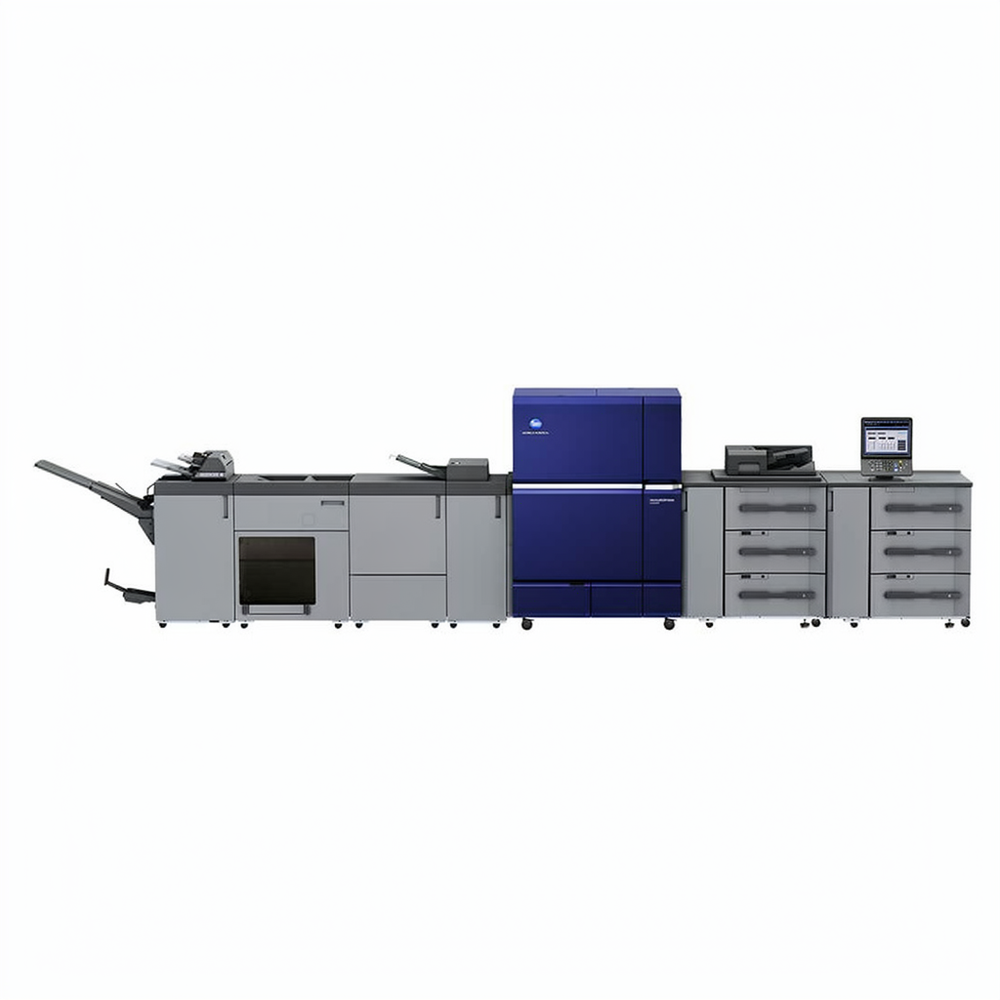
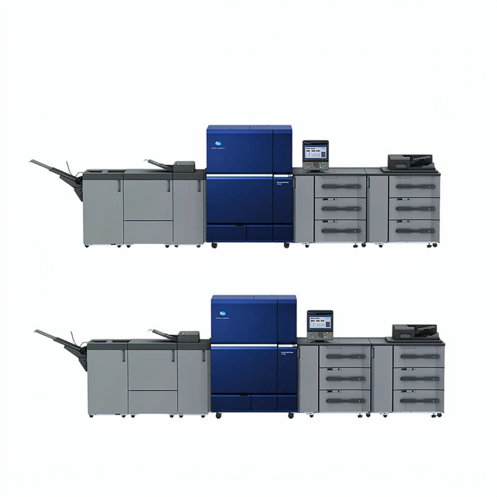
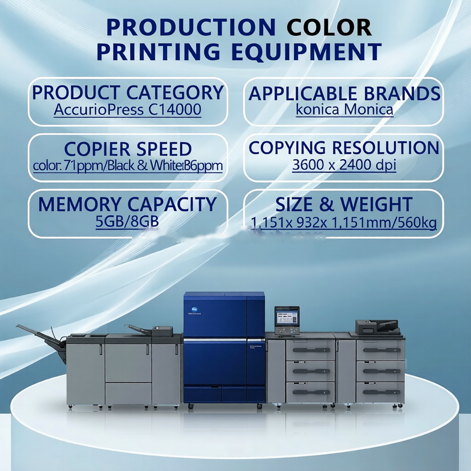
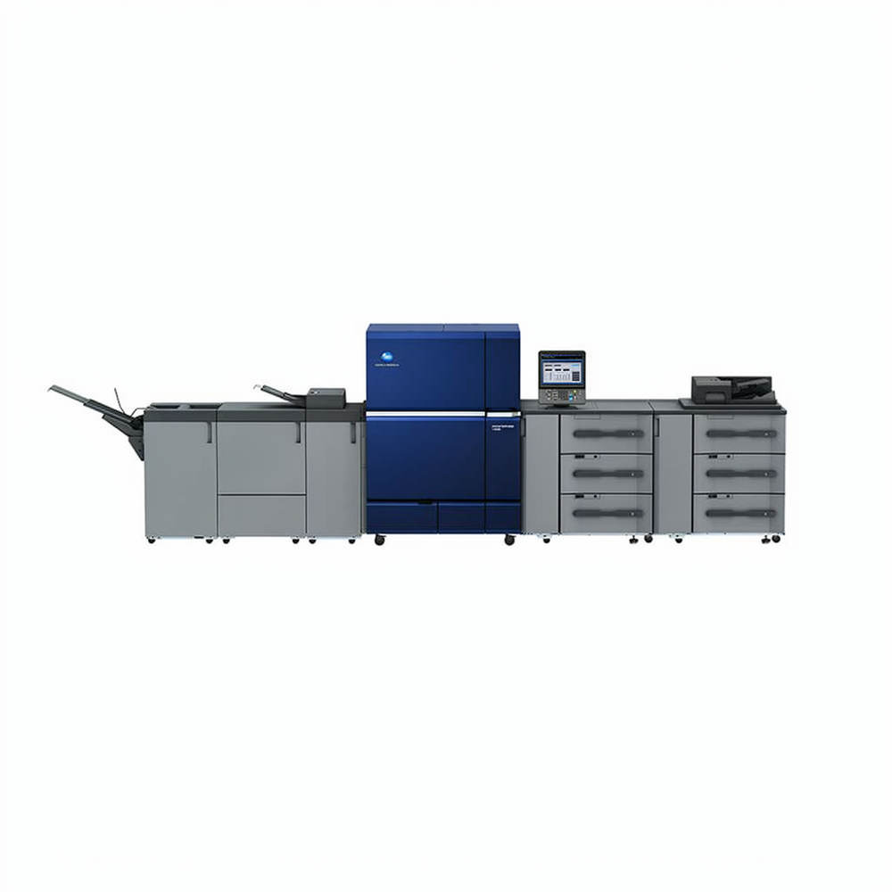
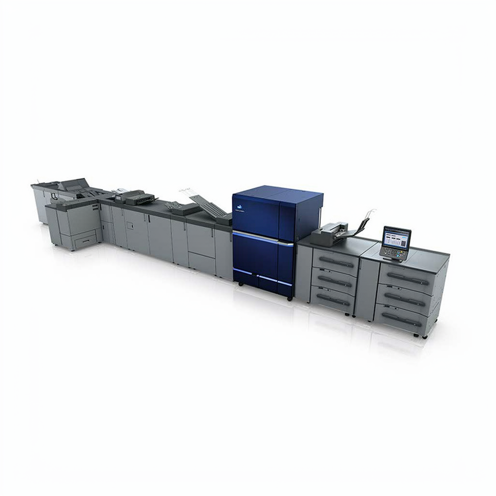

Misma clase de velocidad y resolución que la máquina nueva, por una fracción de la inversión. Antes de comprometerte te enviamos el vídeo de funcionamiento y el contador de impresiones de la unidad concreta.
📧 ¿Prefieres correo?
La economía, sin adornos.
Una prensa de producción nueva de gama alta es un compromiso de seis cifras con una curva de depreciación de varios años. Una unidad reacondicionada profesionalmente de la misma generación hace el mismo trabajo por una fracción de la inversión — y se paga sola en meses, no en años.
Una segunda prensa de producción sin pedir un segundo crédito: acepta trabajos más grandes sin arriesgar el negocio.
Entra al mercado de producción con inversión inicial y sube de gama cuando la cartera esté construida.
Trae el trabajo de color de tiradas largas a casa y deja de pagar precios de terceros.
Stock de una unidad probada, con vídeo de funcionamiento e informe de estado documentado.
Las páginas por minuto son el número que todos citan y la peor forma de elegir. Dos prensas pueden declarar 100 ppm y ser máquinas completamente distintas.
Para ti si: tienes un taller donde el color ya está en cola y la prensa casi nunca queda inactiva. ¿C14000 o C12000? Misma plataforma, 20 ppm de diferencia. Si no trabajas realmente a tope, la C12000 es mejor compra.
Para ti si: necesitas hojas largas, banners o trabajos sobredimensionados junto a la producción normal. La capacidad de formato largo (hasta 1.300 mm) importa más que los 10 ppm entre ambas.
Para ti si: eres una imprenta mediana y el volumen aún no llega a nivel insignia. Compra la clase de velocidad que realmente vas a llenar.
Para ti si: es tu primera prensa de producción, o vienes de una máquina de oficina. Misma plataforma, tres niveles de velocidad — no pagues 15 ppm más de lo que tu mix necesita.
Las velocidades indicadas son el máximo nominal del fabricante. La ficha exacta de la máquina que estés considerando se confirma antes del pedido — en equipo usado la configuración cambia el rendimiento.
Una prensa reacondicionada no es una prensa nueva. Su vida útil restante depende del total de impresiones, del estado del cilindro y de cómo fue mantenida. Por eso mismo te enviamos un vídeo de funcionamiento y el contador de impresiones antes de que te comprometas — y por eso también te diremos cuando una unidad concreta no vale el dinero.
Unidades reales de nuestro stock. Te enviamos fotos y vídeo de la máquina concreta antes de la compra.





Sin sorpresas: ves la máquina funcionando antes de pagar.
Dinos qué produces y a qué volumen — te decimos qué unidad encaja y qué no.